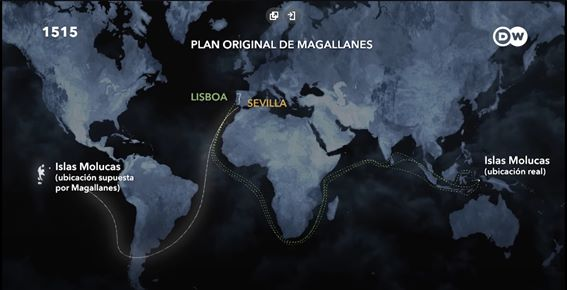
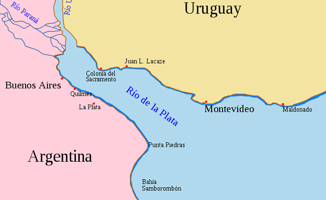
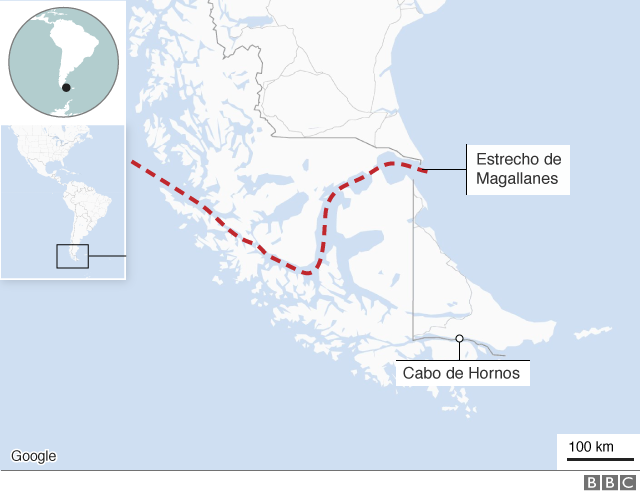

Pasaron Meses en los cuales rodearon todo América del Sur hasta que llegaron a lo que hoy es el río de la Plata. El 12 de enero de 1520, una desembocadura enorme con vistas de mar hizo pensar a Magallanes de que por fin había encontrado el ansiado estrecho, aunque los vientos y el sabor al agua dulce lo hicieron darse cuenta de que no era más que sino, por más de que él no supiera, el río más ancho del mundo.

La incertidumbre de los capitanes y tripulantes de los demás barcos sumado a la desconfianza que le tenían a Fernando por ser portugués hicieron que provocasen muchos botines y que en algunos se vieran asesinados por desleales. Sin embargo, estas microhistorias que se desvían de la trama principal la cual es la ruta marítima son contadas más a detalle en la sección de “Microhistorias”.
Luego de meses de no encontrar nada y con el frio característico de la zona que con un viento infernal hacían del navegar un infierno helado, apareció un oasis. El puerto San Julián fue su salvación ya que tenia agua potable y comida, por lo tanto, Magallanes sin dudarlo ni consultarlo tomo la decisión de pasar el invierno allí y volver a zarpar cuando las condiciones mejoren.

La noche de abril de 1520 surge el motín más grande hacia Magallanes, en el cual la oposición se apoderaba de 3 barcos e intentaba poner en jaque al comandante. Aunque por más de que lo intenten, un manejo espectacular de la situación termina en opresión hacía los amotinadores.
El día después se esperaba un juicio hacia estas personas y así lo fue. Gaspar de Quezada es condenado a muerte ya que Magallanes se basó en las leyes marítimas, sin embargo, si se basó en las leyes marítimas mas de 40 hombres debieron de ser condenados a muerte, pero no fue así. Esto fue porque si desterraba o asesinaba a esa cantidad de gente no iba a poder seguir con la travesía ya que tendría falta de personal, aunque para demostrar autoridad, Fernando de Magallanes decidió también desterrar a Juan de Cartagena y a Pedro Sánchez de la Reina.
Finalmente, y luego de meses de navegar se abre una nueva desembocadura, pero esta vez parecía diferente. Esta desembocadura en dirección al oeste tenia muchos cabos los cuales tenían que introducirse para descartar algún estrecho. Muchos cabos después, el camino se vuelve mas chico hasta que se abren las tierras y se ve un paisaje de mar. El 1 de noviembre de 1520, Magallanes bautiza al estrecho el cual les va a proporcionar una vía de comercio como el estrecho de todos los Santos, sin embargo, más delante de cambió el nombre en conmemoración al capitán Fernando de Magallanes.

No todo iba a ser felicidad ya que les tocaría la parte más difícil, y quien lo diría, un océano pacifico, llano y sin vientos les cobraría una pesadilla ya que se quedarían sin provisiones cruzando un cuerpo de agua interminable con la búsqueda de las tan ansiadas Islas.
Llegan a las islas filipinas donde gracias a una guerra con los pueblos indígenas, Magallanes muere y queda a cargo Juan Sebastián Elcano. Él terminaría lo que una vez Fernando empezó y así fue, en noviembre de 1521 la tripulación que ya solamente contaba con 2 barcos llegó a las islas tan preciadas y finalmente el 8 de septiembre del próximo año llegarían a España. Esta vez no eran 270 marinos ni 5 barcos, sino 18 marinos en un barco.